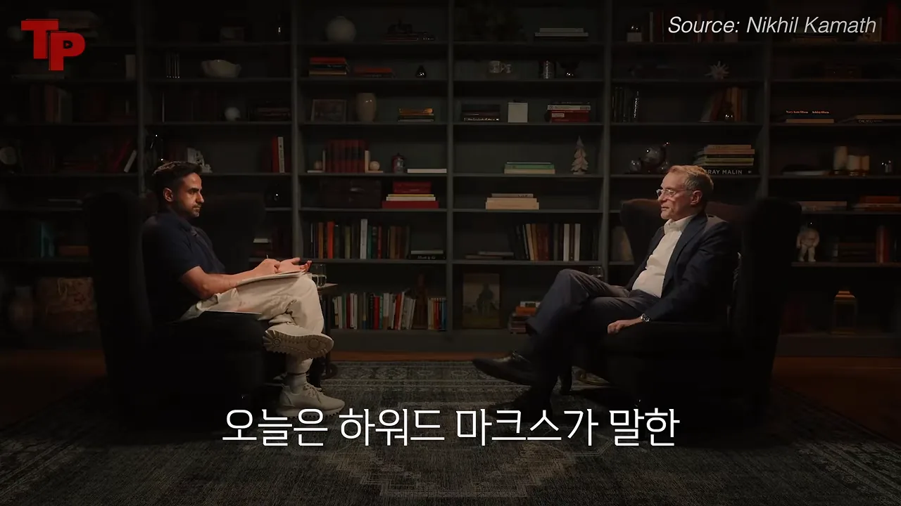
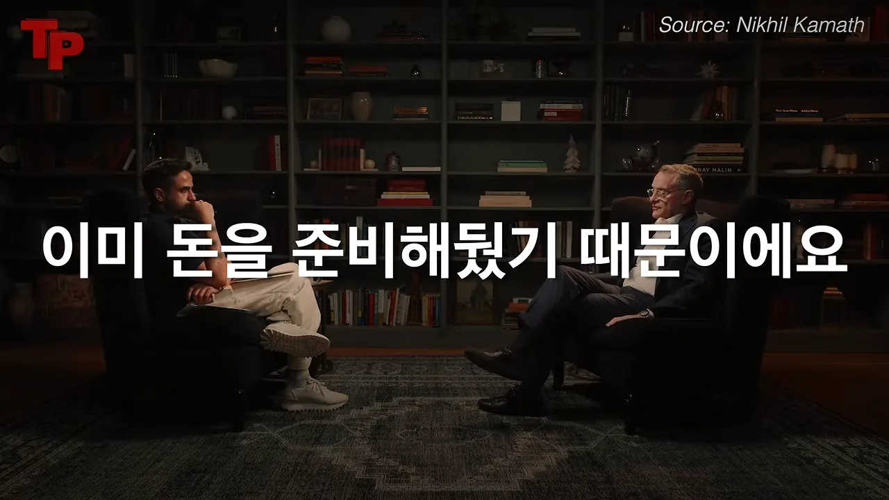
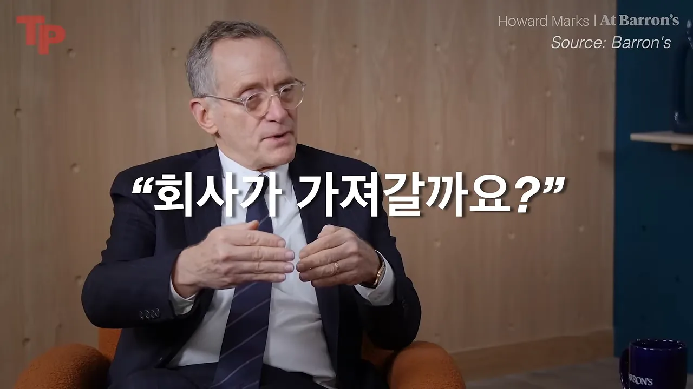
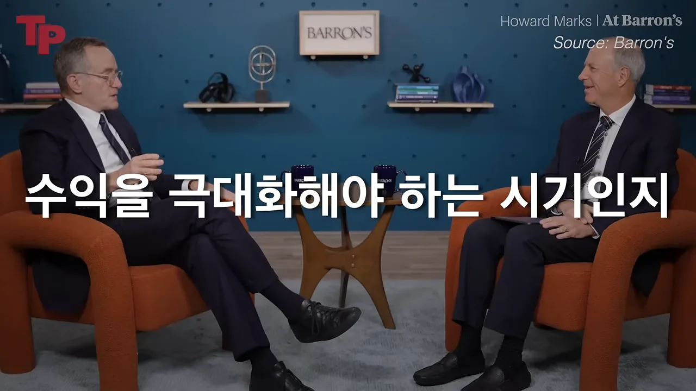
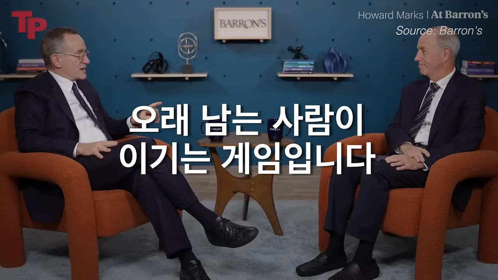

두려운데도 움직이고, 틀릴 수 있다고 인정하기
영상은 한 사람을 소개하며 시작해요. 하워드 막스는 오크트리 캐피털 매니지먼트의 공동 창업자이고, 투자자들이 챙겨 읽는 오크트리 메모를 쓰는 사람이에요. 아래 장면은 서재 같은 세트에서 진행자와 막스가 마주 앉은 인터뷰 화면이에요. 오른쪽 위에 'Source: Nikhil Kamath'라고 적혀 있어요.

영상이 예고하는 다섯 가지 교훈은 이래요. 확신이 생길 때까지 기다리면 기회는 지나가요. 100% 확신하는 사람이 가장 위험해요. 방주는 홍수 전에 만들어야 해요. 남의 결정대로 살면 25년이 사라져요. AI(Artificial Intelligence) 시대에도 마지막으로 남는 건 판단력이에요. 이 섹션은 서로 짝을 이루는 앞의 두 교훈을 함께 다뤄요.
확신을 기다리면 늦어요
2008년 9월 리먼 브라더스가 파산하자 사람들은 금융 세계 전체가 무너진다고 믿었어요. 오크트리는 그 전에 부실채권 펀드를 크게 모아 두었고, 리먼 파산 뒤 15주 동안 매주 큰돈을 투자했어요. 영상은 이 금액을 원화로 바꿔 '15조 원 규모 펀드', '매주 6천억 원'쯤으로 말해요. 원래 인터뷰에서 막스가 말한 숫자는 110억 달러 펀드, 매주 평균 4억 5천만 달러, 15주 합계 약 70억 달러예요.
그렇게 큰돈을 넣었으니 확신이 있었을 것 같지만, 막스는 아니었다고 해요. 같은 신문을 읽고 같은 공포를 느꼈어요. 그 대신 경우의 수를 넷으로 나눠 따졌어요. 아래 표에서 오른쪽 아래 칸이 막스가 가장 피하고 싶었던 경우예요.
영상은 이 생각을 인생으로 넓혀요. 사업, 이직, 새로운 선택은 언제나 불안해요. 불안이 완전히 사라진 기회는 대개 모두가 이미 알아본 기회이고, 그런 기회는 이미 비싸져 있어요. 그래서 물어야 할 건 '무섭지 않은가'가 아니라 '무서운데도 할 만큼 중요한가'라고 해요.
100% 확신이 가장 위험해요
두 번째 교훈은 첫 번째와 반대 방향에서 같은 말을 해요. 확신이 너무 없어도 문제지만, 너무 강해도 문제예요. 막스는 마크 트웨인의 말이라며 이 문장을 자주 인용해요.
It ain't what you don't know that gets you into trouble. It's what you know for certain that just ain't true.
곤란에 빠뜨리는 건 모르는 게 아니라, 확실히 안다고 믿는데 사실이 아닌 거예요.
— 원래 인터뷰 (이 영상 05:03 부근)
모르는 건 인정하면 조심할 수 있어요. 틀린 걸 확실하다고 믿으면 크게 걸어요. 막스는 "내가 틀릴 수도 있지만"이나 "잘 모르지만"으로 시작한 문장이 사람을 곤경에 빠뜨린 적은 없다고 해요. 위험한 건 "100% 확신해요"예요. 아래 막대 두 개가 그 차이를 보여 줘요.
영상의 정리는 균형이에요. 움직일 만큼의 확신은 있어야 하지만, 확신이 교만이 되면 안 돼요. 큰돈을 지키는 사람은 확신이 없는 사람이 아니라, 자기가 틀릴 수 있다는 걸 아는 사람이에요.
방주는 홍수 전에 만들어요
막스는 아내와 즐겨 보는 영화 「스파이 게임」에서 로버트 레드퍼드가 한 대사를 인용해요. 영상은 '영화 속 대사'라고만 말하지만, 원래 인터뷰에서는 영화 제목까지 나와요.
When did Noah build the ark? Before the flood.
노아는 언제 방주를 만들었나요? 홍수 전에요.
— 원래 인터뷰 (이 영상 07:21 부근)
투자하기 가장 좋은 때는 위기 때예요. 그런데 위기 한가운데서는 돈을 모을 수 없어요. 뉴스가 끔찍하고, 모두 현금을 쥐고 싶어 하니까요. 아래 장면의 자막이 이 섹션의 답이에요. 오크트리가 2008년에 움직일 수 있었던 건 '이미 돈을 준비해 뒀기 때문'이에요.

순서를 그려 보면 더 분명해요. 펀드는 위기 전에 모였고, 리먼이 파산한 뒤에는 꺼내 쓰기만 했어요. 아래 칸 하나가 한 주예요.
영상은 이걸 삶의 준비로 옮겨요. 돈이 필요해진 뒤에 돈 공부를 시작하면 늦어요. 건강이 무너진 뒤에 몸을 챙겨도 늦어요. 말하기, 글쓰기, 판매, 관계 맺기 같은 능력도 기회가 눈앞에 온 다음에는 만들 시간이 없어요. 그래서 준비는 아무 일도 없어 보이는 지루한 때, 남들이 관심 없을 때 해야 해요. 기회는 대개 갑자기 오고, 그때 준비 안 된 사람은 '조금만 더 일찍 알았다면' 하고 변명하게 된다고 해요.
남이 정해 준 25년
네 번째 교훈은 투자보다 인생 이야기에 가까워요. 80대의 막스는 사회생활 첫 20~25년 동안 의도를 갖고 결정하지 않았다고 털어놓아요. 남이 결정하게 두었고, 그 시절 자기 의사 결정 과정이 부끄러울 만큼 형편없었다고 해요.
I did not apply intention. I just let other people make the decision.
저는 의도를 갖고 결정하지 않았어요. 그냥 남들이 결정하게 뒀죠.
— 원래 인터뷰 (이 영상 09:35 부근)
막스가 든 예는 이래요. 시티뱅크 리서치 부서에 들어간 건 그 전해 여름 경험이 좋아서였어요. 주식 리서치에서 채권 부서로 옮긴 건 성과가 나빠 나가라는 말을 들어서였어요. 하이일드 채권을 맡게 된 건 채권 부서장이 걸어 온 전화 한 통 덕분이었어요. 막스는 그 전화가 왔을 때 점심을 먹으러 나가 있었다면 다른 사람이 받았을 테고, 그 사람이 지금의 자신이 됐을 거라고 말해요.
영상은 이게 인생의 무서운 점이라고 해요. 우리가 고른다고 생각하지만, 부모가 원하는 길, 친구들이 가는 길, 남들이 인정해 주는 길을 따라 흘러가는 경우가 많아요. 그러다 보면 10년, 20년, 25년이 지나 있어요.
막스가 가장 좋아한다는 문장은 이거예요. 영상은 누구의 말인지 밝히지 않지만, 원래 인터뷰에서 막스는 작가 크리스토퍼 몰리의 말이라고 소개해요.
There is only one success: to live your life your own way.
성공은 단 하나, 자기 방식대로 사는 거예요.
— 원래 인터뷰 (이 영상 11:19 부근)
영상은 특히 40~50대라면 지금 걷는 길이 내가 고른 길인지, 남에게 보기 좋은 길인지 물어보라고 해요. 그렇다고 늦었다고 포기할 일은 아니에요. 막스도 오크트리를 세우면서 처음으로 의도를 갖고 결정했으니까요. 영상의 한 줄 정리는 '가장 큰 후회는 실패가 아니라 내 인생을 내가 고르지 않았다는 사실'이에요.
AI 시대에 사람에게 남는 것
다섯 번째 교훈은 AI 이야기예요. 막스는 AI가 이전 기술과 근본적으로 다르다고 봐요. 철도, 컴퓨터, 인터넷은 모두 생산성을 높이고 속도를 올리는 도구였어요. AI에는 자율성이 있어요. 일을 맡기고 방법을 알려 주지 않아도 스스로 찾아내요.
아래 그림의 왼쪽 세 칸이 막스가 꼽은 이전 기술이고, 오른쪽 칸이 AI예요. 차이는 '방법을 누가 정하느냐'예요.
그래서 막스는 AI가 많은 사람의 실력을 드러낼 거라고 봐요. 인덱스 펀드가 나오자 시장 평균도 못 넘는 주식 투자자가 많다는 게 드러났듯이, AI도 말만큼 실력이 없는 사람들을 들춰낼 거라는 뜻이에요.
그래도 사람에게 남는 것
막스는 사람에게 남는 영역도 이야기해요. 하나는 나쁜 사람과 나쁜 거래를 피하는 감각이에요. 누군가와 이야기하다 보면 이유를 정확히 대기는 어렵지만 '이건 아닌데' 싶을 때가 있어요.
If AI doesn't have hair on its neck, then maybe there's a role left for experienced investors with judgment.
AI에게 목 뒤 털이 없다면, 판단력 있는 노련한 투자자에게 아직 할 일이 남아 있을지 몰라요.
— 원래 인터뷰 (이 영상 13:02 부근)
다른 하나는 과거 데이터가 없는 상황이에요. AI가 잘하는 건 많은 자료를 읽고 패턴을 찾아 이어 가는 일이에요. 그런데 처음 벌어지는 위기, 숫자로 다 설명되지 않는 사람은 배울 과거가 없어요. 막스는 이럴 때 미래 사건의 확률 분포를 더 잘 이해하는 사람이 있다고 말해요. 영상의 말을 기준으로 둘을 나란히 놓으면 이래요.
| AI가 잘하는 것 | 사람에게 남는 것 |
|---|---|
| 많은 데이터를 빠르게 읽고 계산해요 | 이유는 몰라도 '이건 아니다' 싶은 사람과 거래를 피해요 |
| 과거 패턴을 찾아 이어 가요 | 과거 데이터가 없는 처음 겪는 상황에서 판단해요 |
| 정보와 분석을 점점 싸고 빠르게 만들어요 | 무엇을 믿고 피할지, 언제 움직이고 기다릴지 정해요 |
결론은 정보를 많이 외우는 것만으로는 부족하다는 거예요. 정보는 점점 싸지니, AI가 못 보는 부분을 보는 사람이 되는 게 중요하다고 해요.
앞부분 정리
영상은 다섯 교훈을 한 번 더 짚고 이렇게 묶어요. 무섭지 않은 길을 기다리지 마세요, 그런 길은 거의 없어요. 준비라는 이름으로 두려움을, 신중함이라는 이름으로 결정을 미루지 말라고 해요. 다만 무모하게 뛰어들라는 말은 아니라고 덧붙여요.
세상을 바꾸는 기술과 돈 버는 주식은 달라요
뒷부분의 출발점은 이 문장이에요. 최악의 실수는 최고의 시절에 만들어져요. 사람들은 위기 때 망한다고 생각하지만, 실제로는 시장이 좋고 모두 낙관적일 때 기준을 낮춰요. 남들이 사니까 따라 사고, 가격이 올랐으니 좋은 자산이라고 믿고, 시대가 좋았던 걸 내 실력이라고 착각해요. 영상은 이런 착각을 여섯 가지로 나눠요.
첫 번째 착각 — 좋은 기술이면 돈도 번다
막스는 2000년 인터넷 버블을 예로 들어요. '인터넷이 세상을 바꾼다'는 말은 맞았어요. 문제는 사람들이 그 말을 '인터넷 주식은 다 돈을 번다', 더 나아가 '인터넷이라는 이름만 붙어도 가치가 무한하다'로 바꿔 버렸다는 거예요. 막스는 워런 버핏의 말을 빌려요. 투자의 핵심은 산업이 사회에 얼마나 큰 영향을 줄지가 아니라, 어떤 회사가 경쟁 우위를 가졌는지, 그리고 그게 얼마나 오래가는지라고요.
그리고 AI에 대해 질문을 하나 던져요. 아래 장면에서 막스가 손을 모으며 묻는 말이 자막에 떠 있어요. '회사가 가져갈까요?'

질문의 흐름을 따라가면 이래요. 같은 산업의 모든 회사가 AI를 써서 비용을 줄여요. 그다음 고객을 잡으려고 서로 값을 내려요. 그러면 늘어난 이익은 회사가 아니라 고객에게 넘어갈 수 있어요.
그래서 진짜 질문은 '이 기술이 대단한가'가 아니라 '이 회사가 그 기술로 오래 돈을 벌 구조를 가졌는가'예요. 영상은 세상을 바꾸는 기술과 내 계좌를 바꾸는 투자는 같은 말이 아니라고 정리해요.
비싸다는 판단과 떨어진다는 예측
두 번째 착각 — 비싸면 곧 떨어진다
시장이 비싸 보이면 사람들은 바로 '거품이다, 폭락 온다'고 말해요. 막스는 비싸다는 것과 내일 떨어진다는 것은 전혀 다른 말이라고 해요. 비싼 것은 더 비싸질 수 있고, 들뜬 시장은 생각보다 오래가요. 맞는 생각도 타이밍을 잘못 잡으면 틀린 행동이 돼요. 막스는 케인스의 말로 알려진 문장을 인용해요. 시장은 당신이 버틸 수 있는 것보다 더 오래 비이성적으로 남아 있을 수 있다고요.
영상은 이 둘을 '판단'과 '예측'으로 나눠요. 아래 그림의 왼쪽 칸까지는 지금 보이는 걸 보고 내리는 판단이에요. 화살표를 넘어가는 순간 시점을 맞히는 예측이 돼요.
그래서 고수는 극단적으로 시점을 맞히려 하지 않아요. 조금 덜 공격적으로 가고 위험을 줄이지만, 무조건 도망치지도 않아요. 영상의 한 줄 정리는 '비싼 걸 알아보는 것보다 어려운 건 그 비싼 시장을 어떻게 견딜지 정하는 것'이에요.
세 번째 착각 — 미래를 맞혀야 돈을 번다
많은 사람이 투자 고수를 언제 폭락하고 언제 오를지 맞히는 사람으로 생각해요. 막스는 2000년에 쓴 메모 「bubble.com」으로 인터넷 버블을 경고한 사람으로 유명해졌어요. 그런데 그 메모에 예측이라는 단어는 하나도 없었다고 말해요. 그가 한 일은 그때 시장에서 사람들이 어떻게 흥분하고, 말도 안 되는 가치를 어떻게 붙이는지 관찰한 것이었어요.
We never know where we're going, but we sure as hell ought to know where we are.
어디로 가는지는 결코 모르지만, 지금 어디에 있는지는 반드시 알아야 해요.
— 원래 인터뷰 (이 영상 25:23 부근)
막스의 방식은 질문을 바꾸는 거예요. 미래를 맞히려는 질문은 사람을 계속 흔들어요. 현재 위치를 보는 질문은 답할 수 있어요. 영상이 든 질문을 나란히 놓으면 이래요.
| 미래를 맞히려는 질문 | 현재 위치를 보는 질문 |
|---|---|
| 언제 떨어질까? | 지금 사람들은 너무 낙관적인가? |
| 언제 들어가야 할까? | 지금 가격은 기대를 이미 많이 반영했나? |
| 다음 대박은 뭘까? | 사람들은 돈을 잃는 것보다 기회를 놓치는 걸 더 무서워하나? |
| 지금 사야 할까, 팔아야 할까? | 나는 탐욕으로 움직이나, 원칙으로 움직이나? |
영상은 인생도 같다고 해요. 어떤 사업이 뜰지 다 맞히고 시작하려 하면 시작이 늦어져요. 먼저 내 습관, 돈이 새는 곳, 시간을 쓰는 곳, 영향을 주는 사람들을 보라고 해요. 미래를 못 맞혀도 현재를 정확히 보면 훨씬 덜 위험해져요.
시대가 벌어 준 돈을 실력으로 착각하지 않기
네 번째 착각은 좋은 시장에서 번 돈을 내 실력으로 여기는 거예요. 부동산, 주식, 코인이 다 오르면 사람들은 '내 판단이 맞았네, 나는 투자 감각이 있네'라고 생각해요. 진짜 실력일 수도 있어요. 막스는 다만 이 착각을 조심하라고 해요.
막스의 설명은 1980년부터 2020년까지가 금리가 크게 내려간 시대였다는 데서 출발해요. 금리가 내려가면 돈의 가격이 싸지고, 미래 현금흐름의 가치가 높아져요. 자산을 사려는 사람도 늘어요. 영상이 말한 순서대로 그리면 이래요.
그 사람에게 막스가 하는 말은 짧아요. "It wasn't you." 그건 당신이 아니었다는 뜻이에요. 내가 잘해서 번 줄 알았는데 시대가 밀어 준 것일 수 있어요.
문제는 돈을 번 게 아니라, 번 이유를 잘못 해석하는 거예요. 운이 좋았던 걸 실력으로 믿으면 다음에는 더 크게 걸고, 다음 시장 사이클에서 크게 다쳐요. 그래서 진짜 고수는 돈을 벌었을 때도 묻는다고 해요. 내가 잘한 건가, 운이 좋았던 건가, 시장이 쉬웠던 건가, 다음에도 반복할 수 있나. 이 질문이 없으면 수익이 날수록 자신감이 아니라 착각이 커져요.
최대 공격과 최대 방어는 함께 가질 수 없어요
다섯 번째 착각은 공격과 방어를 둘 다 완벽하게 할 수 있다는 생각이에요. 사람들은 큰 수익도 원하고 손실도 피하고 싶어 해요. 막스는 단순하게 말해요. 최대 공격과 최대 방어를 동시에 가질 수는 없다고요. 공격을 높이면 위험이 따라오고, 방어를 높이면 놓치는 기회가 생겨요.
그래서 중요한 건 지금 내가 어느 쪽에 서야 하는지 아는 거예요. 아래 장면의 자막처럼, 지금이 수익을 키워야 하는 시기인지 실수를 줄여야 하는 시기인지 정해야 해요. 영상은 40~50대라면 이 질문이 더 중요하다고 해요. 다시 시작할 시간이 20대만큼 많지 않을 수 있으니까요.

막스의 답은 '조절'이에요. 자막 표기는 '캘at'인데, 문맥상 위험 자세를 맞추는 calibrate로 보여요. 평소 자세를 하나 정해 두고, 세상이 너무 낙관적이면 평소보다 조금 더 조심하고, 사람들이 너무 겁먹었으면 조금 더 공격적으로 가요. 원래 인터뷰에서 막스는 이걸 0(위험 없음)부터 100(최대 위험)까지 눈금이 있는 계기판에 비유해요.
어느 쪽을 고르든 대가가 있다는 것도 잊지 말라고 해요. 공격하면 불안이, 방어하면 아쉬움이 따라와요. 성숙한 사람은 대가 없는 선택을 찾지 않고, 자기가 감당할 대가를 정해요.
영웅보다 오래 남는 사람
여섯 번째 착각은 영웅처럼 한 방에 이겨야 성공한다는 믿음이에요. 한 번의 대박, 모두가 틀렸을 때 나만 맞히는 순간 같은 장면을 떠올리기 쉬워요. 막스는 반대로 말해요. 대부분의 사람은 결국 스스로 자기 발을 쏜다고요. 남에게 지는 게 아니라 자기 욕심, 조급함, 과신에 진다는 뜻이에요.
영상이 든 '자기 발을 쏘는 행동'은 이래요.
- 무리한 투자와 과한 대출
- 감당 못 할 소비와 레버리지
- 남들 따라가기
- 멈춰야 할 때 멈추지 못하는 습관
막스는 오크트리의 투자 스타일을 세 마디로 표현해요. 항상 좋고, 가끔 훌륭하고, 절대 끔찍하지 않은 것. 원래 인터뷰에서는 단골 식당을 칭찬하는 말로 시작해, 이런 성적을 40~50년 이어 가면 큰 결과로 불어난다고 덧붙여요. 아래 장면의 자막이 이 섹션의 결론이에요. 오래 남는 사람이 이기는 게임이라는 거예요.

영상은 이걸 사업, 커리어, 관계까지 넓혀요. 항상 완벽할 필요는 없고 가끔 잘하면 돼요. 하지만 나를 무너뜨리는 선택은 피해야 해요. 큰돈을 벌기 전에 큰 실수를 피하고, 빨리 올라가기 전에 무너질 선택을 줄이라고 해요.
마지막 문장
영상은 뒷부분을 이렇게 맺어요. 시장이 좋을 때 정신을 차려야 해요. 모두가 돈을 벌었다고 할 때 그 돈이 실력인지, 운인지, 시대의 바람인지 봐야 해요. 새 기술이 세상을 바꾼다고 할 때 그게 정말 내 계좌를 바꿀지 따져 보고, 비싸 보인다고 내일 무너지는 건 아니라는 것도 알아야 해요.
가장 좋은 시간에 가장 조심해야 합니다.
— 영상 33:15